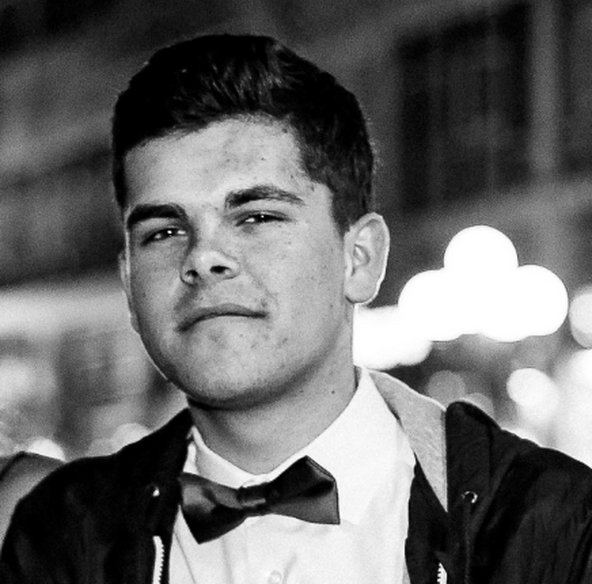

Russell Reed
Summer 2014, Session 2
MIT Launch Onboarding Coordinator
- Co-founded The Bridge Initiative at MIT Launch and has continued past the program with growing this company. The Bridge Initiative continued at the Catapult Ideas incubator, where five new team members as well as two advisors from Booth joined the team
- Worked as a research intern for both Harvard Business School and the Carr Center for Human Rights Policy at Harvard, working specifically with the Initiative on Violence Against Women
- Previously founded Leadership in Performing Arts a program that promotes youth involvement in community service and the arts and also fundraises for the ECOLIFE Foundation